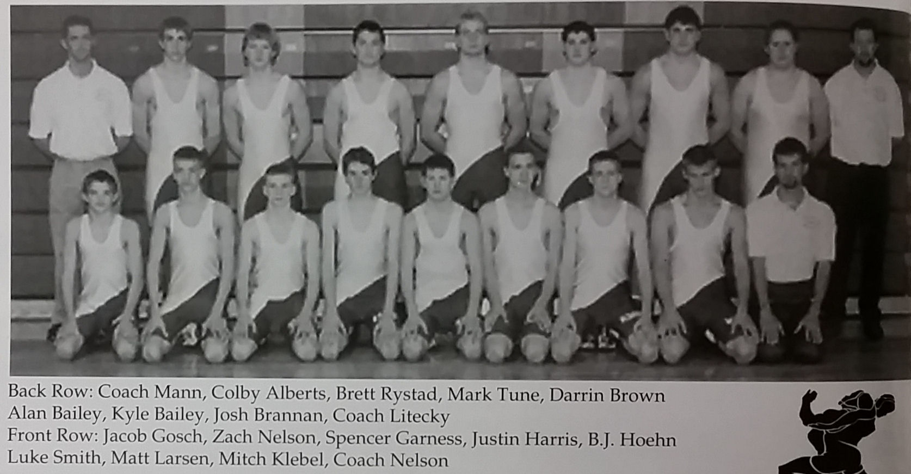

Season
2002-03
18-8Dual record
44Wrestlers
Chris LiteckyHead coach

Roster
| Wt | Wrestler | Grade | Record | State |
|---|---|---|---|---|
| Dec. | 6th Zumbrota-Mazeppa | W | 58-20 | |
| Dec. | 7th Anoka | L | 33-30 | |
| Dec. | 7th Forest Lake | L | 34-32 | |
| Dec. | 7th Goodhue | T | 33-33 | |
| Dec. | 10th Stewartville | W | 39-21 | |
| Dec. | 14th Caledonia | L | 36-34 | |
| Dec. | 14th Austin | W | 54-27 | |
| Dec. | 14th Dassel-Cokato | L | 39-23 | |
| Dec. | 14th Plainview-Elgin-Millville | W | 38-32 | |
| Dec. | 17th Pine Island | L | 30-28 | |
| Dec. | 17th Farmington | W | 40-29 | |
| Jan. | 3rd Triton | W | 52-11 | |
| Jan. | 10th Hayfield | W | 43-23 | |
| Jan. | 10th Waterville-Elysian-Morristown | W | 48-21 | |
| Jan. | 16th Lake City | W | 32-26 | |
| Jan. | 18th Janesville-Waldorf-Pemberton | W | 62-15 | |
| Jan. | 18th St. James @ Janeville | W | 42-28 | |
| Jan. | 18th Mankato Loyola @ Janesville | W | 75-6 | |
| Jan. | 23rd Kenyon-Wanamingo | W | 48-16 | |
| Jan. | 23rd Grand-Meadow-LeRoy/Olstrander/K | W | 34-31 | |
| Jan. | 25th Fillmore Central/Laneboro/Mable-Canton | W | 53-28 | |
| Jan. | 25th Rochester Mayo | L | 29-28 | |
| Jan. | 25th Zumbrota-Mazeppa | W | 57-21 | |
| Jan. | 25th Dover-Eyota | W | 51-20 | |
| Jan. | 30th Byron | W | 47-25 | |
| Feb. | 7th Cannon Falls | L | 40-27 | |
| Feb. | 15th Cannon Falls | L | 38-30 | |
| 103# | Jake Josch | 8th | 28-12 | |
| 112# | Zach Nelson | 12th | 38-7 | |
| 119# | Specer Garness | 8th | 29-11 | |
| 125# | Justin Harris | 12th | 12-20 | |
| 130# | BJ Hoehn | 10th | 10-15 | |
| 135# | Matt Larson | 11th | 24-15 | |
| 140# | Ryan Grzanek | 10th | 0-6 | |
| 145# | Colby Alberts | 10th | 36-5 | |
| 152# | Mitch Klebel | 10th | 24-15 | |
| 160# | Bryce Gransee | 10th | 7-5 | |
| 171# | Mark Tune | 10th | 4-28 | |
| 189# | Darrin Brown | 12th | 30-10 | |
| 215# | Kyle Bailey | 10th | 26-7 | |
| 285# | Alen Bailey | 10th | 18-14 | |
| 103# | Nate Nelson | 9th | 1-0 | |
| 145# | Brett Kuehl | 9th | 4-11 | |
| 160# | Chris Duncan | 12th | 1-2 |
Team Results
18-8 · Click to expand
- Dec. 6thZumbrota-MazeppaW58-20
- Dec. 7thAnokaL33-30
- Dec. 7thForest LakeL34-32
- Dec. 10thStewartvilleW39-21
- Dec. 14thCaledoniaL36-34
- Dec. 14thAustinW54-27
- Dec. 14thDassel-CokatoL39-23
- Dec. 14thPlainview-Elgin-MillvilleW38-32
- Dec. 17thPine IslandL30-28
- Dec. 17thFarmingtonW40-29
- Jan. 3rdTritonW52-11
- Jan. 10thHayfieldW43-23
- Jan. 10thWaterville-Elysian-MorristownW48-21
- Jan. 16thLake CityW32-26
- Jan. 18thJanesville-Waldorf-PembertonW62-15
- Jan. 18thSt. James @ JanevilleW42-28
- Jan. 18thMankato Loyola @ JanesvilleW75-6
- Jan. 23rdKenyon-WanamingoW48-16
- Jan. 23rdGrand-Meadow-LeRoy/Olstrander/KW34-31
- Jan. 25thFillmore Central/Laneboro/Mable-CantonW53-28
- Jan. 25thRochester MayoL29-28
- Jan. 25thZumbrota-MazeppaW57-21
- Jan. 25thDover-EyotaW51-20
- Jan. 30thByronW47-25
- Feb. 7thCannon FallsL40-27
- Feb. 15thCannon FallsL38-30
Head coachChris Litecky